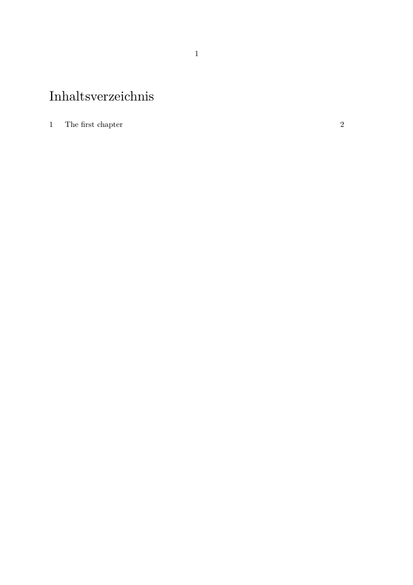

Contents
Summary
Instances
| \setupheadtext | Certain sections, like the table of contents or the list of figures, have a default title head. This title can be altered with \setupheadtext. See #Description for the list of defined section head labels. |
| \setuplabeltext | This class holds most other labels like the Figure and Table used in float captions. |
| \setupmathlabeltext | |
| \setuptaglabeltext | |
| \setupunittext | |
| \setupoperatortext | |
| \setupprefixtext | |
| \setupsuffixtext | |
| \setupbtxlabeltext |
Settings instance
Description
the word Figure is generated automatically when a caption is placed under a figure. These kind of words are called label texts. Labels are set with the command \setuplabeltext, and retrieved with the command \labeltext. They follow the language set with \mainlanguage, not the local bits of different language that are set with \language.
Note Nearly all the labels in the ConTeXt core are actually loaded from a lua table
in lang-txt.lua, instead of via this interface.
NB The option parser for the command setuplabeltext is known to behave somewhat differently from most setups, posing minor constraints on code formatting. For instance the trailing comma after an assignment, otherwise employed to delimit the value, will lead to an error here. The final option in the list needs thus to be terminated by the closing bracket.
\setuplabeltext [ Nomen=nomen, Est=est, Omen=est, %% <= fails! ] \setuplabeltext [Nomen=nomen, Est=est, Omen=est] %% <= works \starttext \labeltext{Nomen} \labeltext{Est} \labeltext{Omen} \stoptext
For \setupheadtext, here is the list of known section heads:
| name | text |
|---|---|
| content | Contents |
| tables | Tables |
| figures | Figures |
| graphics | Graphics |
| intermezzi | Intermezzos |
| index | Index |
| abbreviations | Abbreviations |
| logos | Logos |
| units | Units |
| pubs | References |
Examples
Example for \setupheadtext
-
\setuppapersize[A5] \mainlanguage[de] % default headtext is 'Inhalt' \setupheadtext[de][content=Inhaltsverzeichnis] \starttext \completecontent \chapter{The first chapter} \stoptext
- 
Example for \setuplabeltext
Here is an example of changing section and subsection heads.
-
% English labels \setuplabeltext[en][section=My section ] % We want a space at the end of the label \setuplabeltext[en][subsection=My subsection ] % Dutch labels \setuplabeltext[nl][section=Mijn hoofdstuk ] % We want a space at the end of the label \setuplabeltext[nl][subsection=Mijn onderdeel ] \def\setheadnumber#1#2{#1. #2} \setuphead [section,subsection] [command=\setheadnumber, before={\blank[disable]}, after={\blank[disable]}] \starttext \section{First Thoughts} \subsection{First Subsection} \hairline % Changing the language does not change the labels \language[nl] \section{Second Thoughts} \subsection{Second Subsection} \hairline % To change the labels, change the main language. \mainlanguage[nl] \section{Third Thoughts} \subsection{Third Subsection} \hairline % Retrieving a label explicity: This is the Dutch label for sections: \labeltext{section}. \stoptext
results in
-

Notes
See also
Help from ConTeXt-Mailinglist/Forum
All issues with:
- \setupheadtext on the mailing list (all results)
- \setupheadtext on the mailing list (subject only)
- \setupheadtext on stack exchange
- \setupheadtext in ConTeXt's source
- \setuplabeltext on the mailing list (all results)
- \setuplabeltext on the mailing list (subject only)
- \setuplabeltext on stack exchange
- \setuplabeltext in ConTeXt's source
- \setupmathlabeltext on the mailing list (all results)
- \setupmathlabeltext on the mailing list (subject only)
- \setupmathlabeltext on stack exchange
- \setupmathlabeltext in ConTeXt's source
- \setuptaglabeltext on the mailing list (all results)
- \setuptaglabeltext on the mailing list (subject only)
- \setuptaglabeltext on stack exchange
- \setuptaglabeltext in ConTeXt's source
- \setupunittext on the mailing list (all results)
- \setupunittext on the mailing list (subject only)
- \setupunittext on stack exchange
- \setupunittext in ConTeXt's source
- \setupoperatortext on the mailing list (all results)
- \setupoperatortext on the mailing list (subject only)
- \setupoperatortext on stack exchange
- \setupoperatortext in ConTeXt's source
- \setupprefixtext on the mailing list (all results)
- \setupprefixtext on the mailing list (subject only)
- \setupprefixtext on stack exchange
- \setupprefixtext in ConTeXt's source